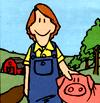
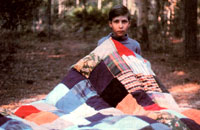
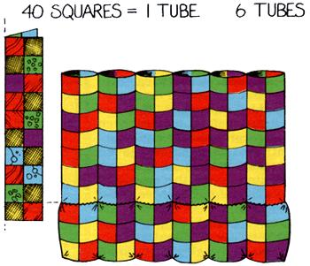
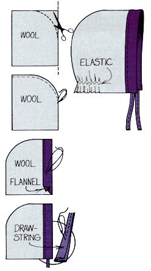

Mother feels strongly that youths can be creative "doers" worrking toward more ecological and self-reliant lifestyles... whether their tasks be raising chickens on a farm or maintaining rooftop container gardens in the city. To support the endeavors of our often overlooked "underage" citizens, we're glad to publish well-written articles from younger children and teenagers concerning projects they've undertaken. However, we recommend that all young authors query (that is, send us a letter telling about the story you'd like to do) before writing a full article. Article Query; Mother Earth News; 1503 SW 42nd St.; Topeka, KS 66609; or letters@MotherEarthNews.com.
Stephen, Tirzah and Rachel Ball
My dad used to run a health food store. He saved all the peanut-shaped polystyrene foam packing pieces that came in boxes of vitamins because he thought that maybe they could be used somehow. Well, one year Dad's birthday was coming up and I needed to make him a gift, so I used the packing bits, and some leftover cotton material from Mom's rag box, to make a patchwork quilt for him.
To create the birthday comforter, I first cut 240 8" X 8" pieces of material and then stitched the squares into 24 strips. (I used the sewing machine.) Each one was 10 squares long. Then I sewed the strips together, side by side in groups of four, and doubled each one lengthwise to make six big tubes. Each tube was almost 16" wide. I stitched the tubes together, side by side, to make the unfilled quilt . . . and then sewed the bottoms of all the tubes shut.
Next, I had to stuff the comforter. I filled all the tubes one third full with Styrofoam peanuts and sewed all the way across the quilt, just above the stuffing, to hold the packing bits in place. Then I filled the tubes up to the two-thirds level and sewed across them again. The final step was to stuff the last third of the tubes and stitch the open edge of the bed covering shut.
When I was done (I didn't work on the project all at once, so it took me a pretty long time), I had made a nice snuggly quilt for free. And best of all, Dad says it's very warm.
Do you sleep in a cold room? The folks in our family do. But after I learned that 70% of a person's body heat loss is through the head, I figured out a way to make noggin-warmers for all the children in our family (and I have three brothers and four sistersl). Nowadays, we all sleep snug . . . because we put our nightcaps on!
Here's how to do it yourself. First, gather up some flannel and some wool. (I think it's fun to recycle used cloth, so I made ours from old jackets, shirts, and pajamas.) Cut a 12" X 20" piece of wool and fold it in half so it's 10" X 12" . Now round off the back and top of the hat-to-be by cutting a curve that starts halfway up the folded side and ends halfway across the top. Sew right sides (the ones that will show when the garment's finished) together along this curve, leaving about a half-inch seam. Do this by starting at the middle of the back-where you began cutting-and working all the way (don't stop halfway this time) across the top.
Next, cut a piece of flannel that's 12" X 24" (4" longer than the first piece). Fold it and sew it as you did the wool. After that, turn the flannel inside out-placing its seam on the inside-and pull the wool (which still has its seam outside) over it. At this point, the right sides of both materials should face each other and the longer flannel will poke out some from under the wool.
Sew around the bottom edge of the head warmer, making sure-as you do so-that the centers of the materials are matched. Now turn the night cap "inside out" (actually, it's "outside in") so the seams are hidden, the right sides are showing, and the wool is on top. Fold the protruding flannel section back onto the wool, turn under the raw edge of this material, and topstitch along this edge. Now, you'll have a tube around the front edge of the cap.
You can make a drawstring to go through this tube by cutting a separate 4" X 50" piece of flannel . . . folding the two long edges in to the middle. . . folding that double-creased strip in half lengthwise . . . and topstitching the whole 50" piece. Run that cord through the hat's tube (temporarily fasten a big safety pin on one end of the "string" to help you push it along).
At this point you can either call it quits or make one last addition to help the headgear fit better. If you want to keep cold air from sneaking in around the back of your neck, pin the middle of a 4"-long piece of elastic to the hat's inside bottom edge. Stretch the ends of the elastic toward the sides of the cap and pin them down. Then, using the zigzag stitch on the machine, fasten the stretch cord in place by starting in the middle and sewing outward to both of the ends.
You're now ready to put the cap on your head, tie the string under your chin, go to bed . . . and sleep toasty warm. The head-warmer works so well that you'll want to take it with you on camping trips as well as use it at home. Why, when the weather gets really cold, you may even be tempted to wear your nightcap all day longl
My daddy believes that bubble gum is bad for us, so he lets us chew wheat berries (wheat grains) instead. We like the little seeds, too, and we've learned how to blow bubbles with them. (Dad think's that's neat.)
To do this yourself, grab a handful of wheat berries . . . but don't take so many that you can't close your handl Then put the grains in your mouth and chew them for 15 to 30 minutes. After a while, they'll soften up, and you'll be able to blow bubbles from the mushy food.
It's a lot of fun. If you can't do it at first, keep on trying . . . you'll get the hang of it. And if you want a special treat, chew some wild huckleberries with the wheat seeds. You'll get purple berry guml
EDITOR'S NOTE: Two of MOTHER's staffers tried Rachel's idea, but we couldn't stop ourselves from swallowing the gummy seeds before they were malleable enough to make bubblesl So we wrote back to inquire, and Connie Ball-the mother of Rachel, Steve, and Tirzah-told us that she'd had the same problem. Her children, though, have the patience to stick with it until they can blow wheatberry bubbles . . . and now they always chew the wholesome kernels instead ofgum.
|
 |
|
 |
|
 |
|
 |
|
|
|
|